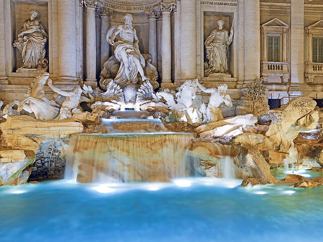
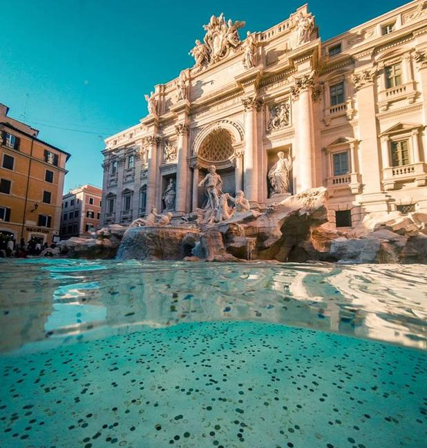
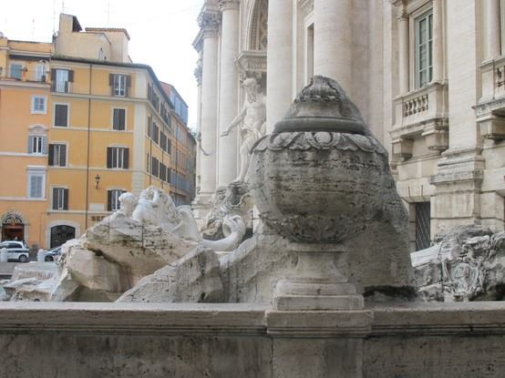
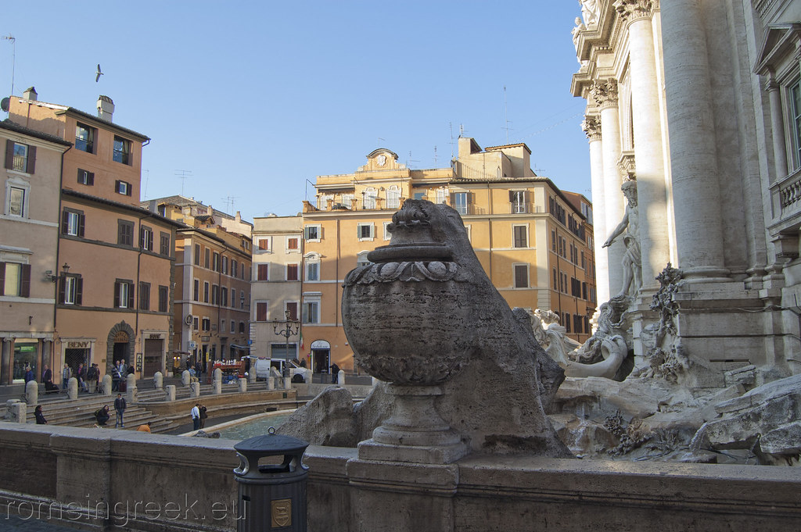
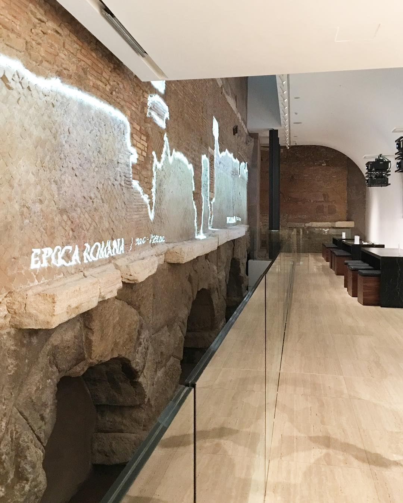
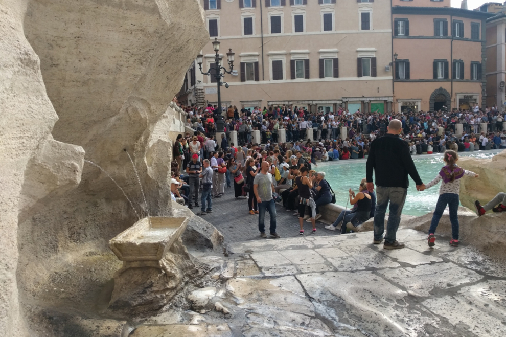
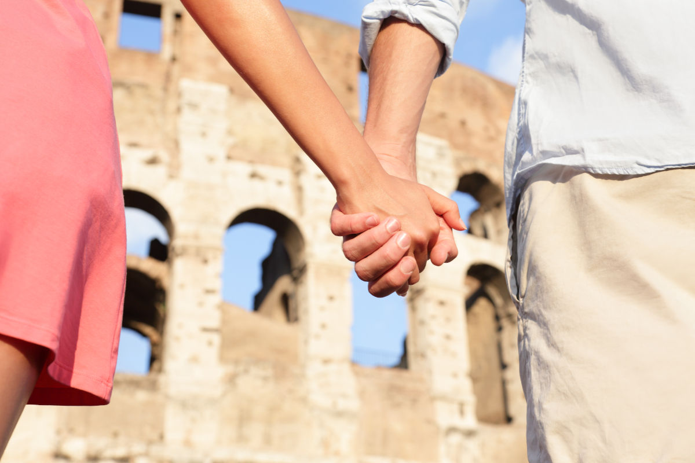
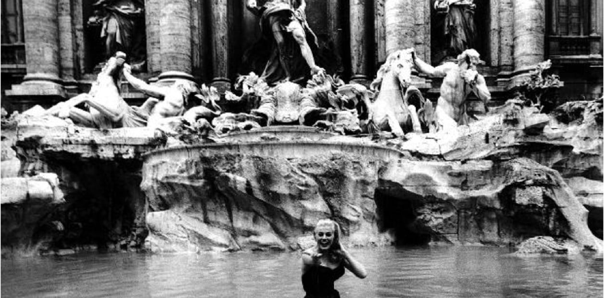
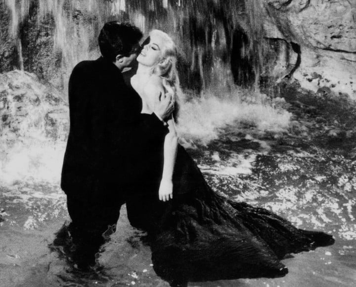

La Fontana de Trevi es mundialmente famosa y probablemente figure en los primeros puestos de tu lista de cosas que ver en Roma. Cada día, miles de turistas se reúnen en torno a la fuente. ¿Pero por qué es tan famosa?
|

EL AGUA CLARA DE LA FONTANA DI TREVI |
El agua perfecta para el té
El agua de la Fontana di Trevi proviene del acueducto Acqua Vergine, de acuerdo con los expertos de la época, esta era la mejor agua y con mejor sabor de toda Roma. Cada día, se llenaban grandes barriles con el agua de la fuente para llevarlos al Vaticano. Al parecer, el agua era tan deliciosa que los ingleses de Roma la usaban para hacer té. En 1961, sin embargo, el agua se declaró como no potable. En la actualidad, el agua de la Fontana di Trevi se filtra a través de bombas y es igual de limpia que el agua de su hotel. Si se toma directamente de la boca, no del fondo, el agua es perfecta para el consumo, si se atreve, claro. |
SE USABA PARA PREPARAR TÉ |
||
|
UNA TRADICION QUE DEJA 1.5 MILLONES DE DÓLARES AL AÑO |
Cómo casarse con un romano
La Fontana di Trevi es el lugar al que venir y tirar monedas al agua para atraer a la buena suerte. La tradición dice que si arrojas una moneda sobre tu hombro y en la fuente, luego te das la vuelta rápidamente y puedes ver la moneda golpeando la superficie del agua antes de hundirse, visitarás Roma nuevamente. Dos monedas propiciarán un encuentro con el amor de su vida, y tres monedas le garantizan el matrimonio con un local. Las monedas nunca permanecen en el agua más de 7 días, la ciudad las retira cada semana y dona el dinero a obras de caridad. |

EL DINERO RECAUDADO SE DONA ALA FUNDACIÓN CARITAS |
||
|

AS DE COPAS |
El “As de Copas” fue construido por venganza
Durante la elaboración de este increíble monumento, un barbero de la zona se quejaba todo el tiempo del ruido que generaba su construcción, se dice que odiaba la idea de ver en el reflejo de sus espejos la escultura. Así que Salvi construyó un “as de copas” para que al terminar la Fontana, el babero jamás pudiera ver la obra completa. |

COLOCADO POR SALVI |
||
|

ACUEDUCTO VIRGO |
Es uno de los acueductos más antiguos de Roma
La Fontana de Trevi se encuentra en la convergencia de tres rutas (tre vie, en italiano, de donde se deriva su nombre) y es el punto final de dos antiguos acueductos: Aqua Virgo y Acqua Vergine.
|

ACUEDUCTO VERGINE |
||
|

FUENTE DE LOS ENAMORADOS |
Leyenda de los enamorados
Otra leyenda: A la izquierda de la fuente de Trevi, encuentran una pequeña fuente llamada «La fuente de los enamorados de Roma» que si bebéis de sus aguas, asegura eterna fidelidad a la pareja.
|

BEBER AGUA ASEGURA ETERNA FIDELIDAD |
||
|

ESCENA DE LA DOLCE VITA |
La Fontana de Trevi en el cine
Este símbolo de la ciudad de Roma y su Dolce Vita ha sido una fuente de inspiración para el mundo del cine que, sin permanecer indiferente a la belleza de la fuente de Trevi, ha utilizado su ambiente y su imagen en varias ocasiones. Entre las principales: la película Tre soldi nella fontana, de 1954, dirigida por Jean Negulesco; Tototruffa 62, película rodada en 1961 y dirigida por Camillo Mastrocinque; Fontana di Trevi, la película de Carlos Campogalliani. |

MARCELLO MASTROIANNI Y ANITA EKBERG, EN LA DOLCE VITA |